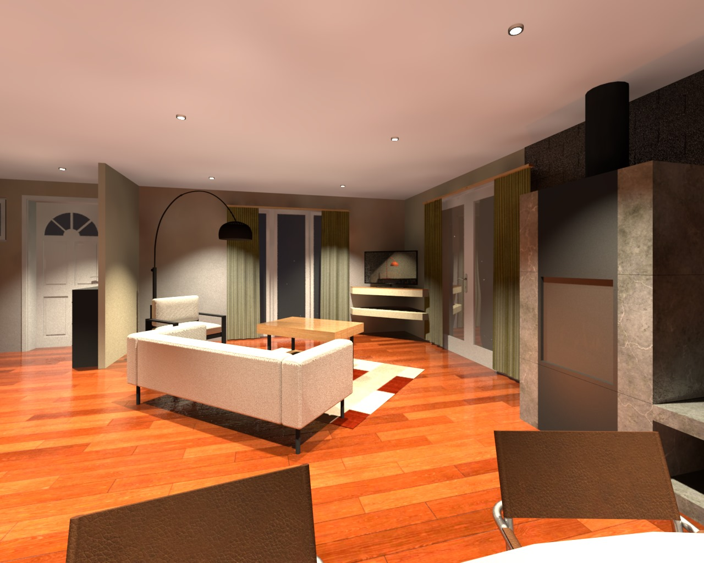
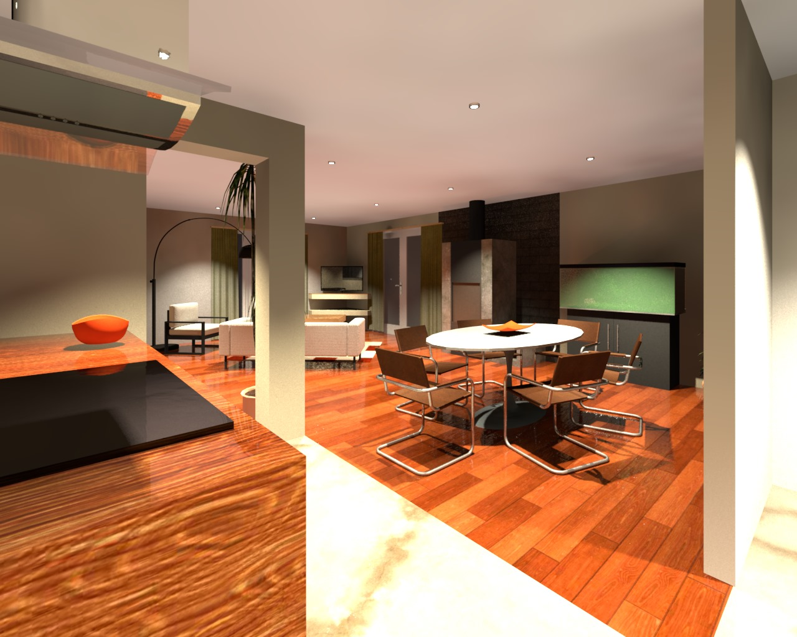
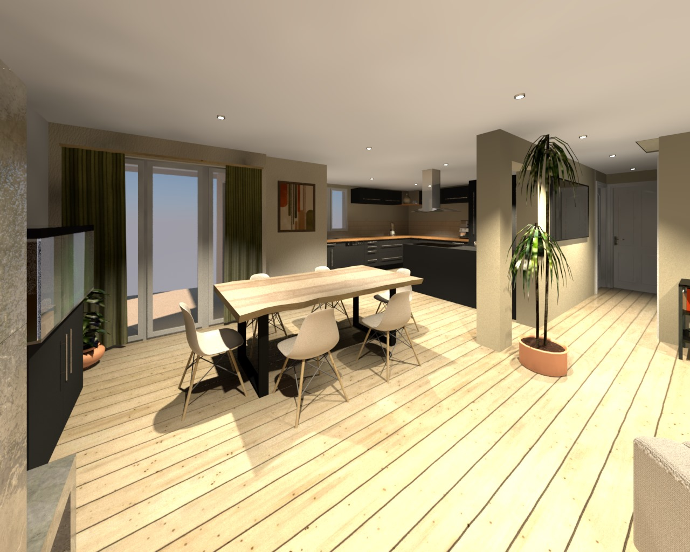
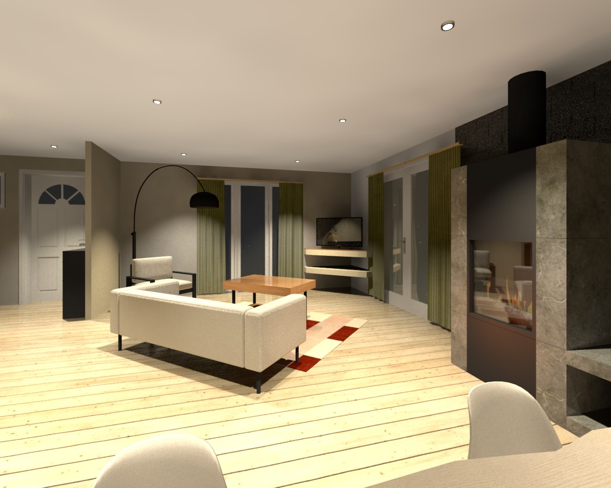
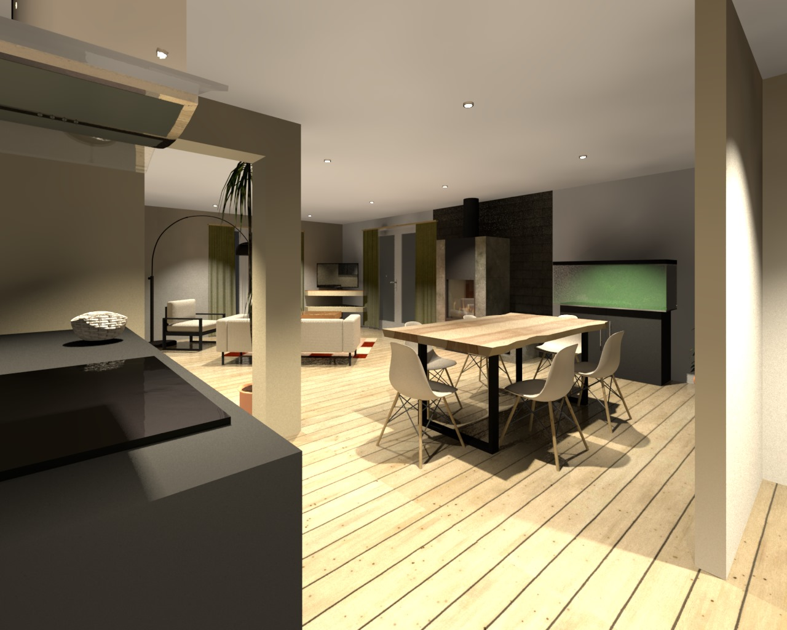

LpStudio
LpStudio
Séjour & cuisine ouverte
Projet de conception (plans + 3D) d’un séjour avec cuisine ouverte, décliné en deux univers distincts afin de proposer une double lecture esthétique et fonctionnelle de l’espace.
L’objectif était d’optimiser la circulation entre cuisine et espace salon tout en structurant visuellement les fonctions. Deux propositions ont été développées à partir d’un même plan, mais avec des partis pris esthétiques différents.
Une première ambiance mid-century, plus chaleureuse et graphique, puis une seconde interprétation scandinave contemporaine, plus lumineuse et minimaliste.

Plan d’aménagement

Proposition 01 — Mid-century
Une ambiance structurée et chaleureuse : bois, contrastes marqués et mobilier d’inspiration vintage, pour un intérieur avec du caractère tout en conservant une cohérence globale.


Proposition 02 — Scandinave contemporain
Une lecture plus douce et épurée de l’espace : palette claire, matières naturelles et lignes simples, pour un séjour lumineux et intemporel.


